Azotowce
Pierwiastek leżący w drugim okresie – azot \(N_{2}\) jest gazem, głównym składnikiem powietrza. Otrzymujemy go przez wykroplenie powietrza, jest jednym z mniej reaktywnych gazów. W obecności katalizatora reaguje z tlenem dając tlenek azotu (II)
\[N_{2} + O_{2} \leftarrow_{\Delta T\ \Delta p}^{katalizator} \rightarrow 2NO\]
Reaguje również z metalami aktywnymi (I i II grupa) dając azotki:
\[6Na + N_{2} \rightarrow 2Na_{3}N\]
Azotki to związki o budowie jonowej, składają się z kationu metalu i anionu \(N^{3 -}\) . Są one bardzo silnymi zasadami, reagują z związkami posiadającymi dodatnio naładowane wodory, również z wodą:
\[Na_{3}N + H_{2}O \rightarrow NaOH + Na_{2}NH\]
\[Na_{2}NH + H_{2}O \rightarrow NaOH + NaNH_{2}\]
\[NaNH_{2} + H_{2}O \rightarrow NaOH + NH_{3}\]
Jednocześnie możliwe jest przeprowadzenie tych reakcji w jednej kolbie używając nadmiaru wody
\[Na_{3}N + 3H_{2}O \rightarrow 3NaOH + NH_{3}\]
Związki te zawierają anion wywodzące się z amoniaku:
W imidku sodu \(Na_{2}NH\) jest jon imidkowy \(NH^{2 -}\) , natomiast w amidku sodu \(NaNH_{2}\) znajduje się anion \(NH_{2}^{-}\) czyli anion amidkowy. Poniżej przedstawiono strukturę tych jonów. Widać, że przekształcanie ich polega na przyłączaniu zgodnie z teorią Broensteada kolejnych atomów wodoru.
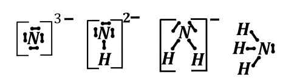
Wodorki azotu
Najbardziej popularnym i znanym wodorkiem azotu jest amoniak. Jest on bezbarwnym gazem o charakterystycznym zapachu kociej uryny. Otrzymywany jest on obecnie w syntezie bezpośredniej:
\[N_{2} + 3H_{2} \rightleftarrows 2NH_{3}\]
Reakcja ta jest odwracalna i stanowi piękny przykład zastosowania reguły przekory. Najważniejsze zastosowanie amoniaku to otrzymywanie nawozów, jest on głównym substratem do tworzenia saletr (azotanow amonu, sodu i potasu).
Amoniak jest gazem (temp wrzenia = - 33°C ), może być używany, jako rozpuszczalnik protonowy po skropleniu. Jest on rozpuszczalnikiem o właściwościach zbliżonych do wody, tworzy silne wiązania wodorowe oraz ulega również reakcji autodysocjacji:
\[NH_{3} + NH_{3} \rightleftarrows NH_{4}^{+} + NH_{2}^{-}\]
W tych roztworach formą kwaśną analogiczną do \(H_{3}O^{+}\) jest jon \(NH_{4}^{+}\) , a zasadową zamiast \(OH^{-}\) jest \(NH_{2}^{-}\) .
W wodzie amoniak rozpuszcza się bardzo dobrze, z uwagi na tworzenie wiązań wodorowych między cząsteczkami wody i amoniaku; możliwe jest uzyskanie roztworu o stężeniu do 30% . Stężone wodne roztwory amoniaku zwane są wodą amoniakalną. Amoniaku można używać jako soli trzeźwiących.
Niegdyś amoniak otrzymywany był w wieloetapowym ciągu reakcji. Pierwszym etapem była reakcja karbidu \(CaC_{2}\) (węglik wapnia) z azotem zachodząca wedle schematu:
\[CaC_{2} + N_{2} \rightarrow CaCN_{2} + C\]
Powstały związek \(CaCN_{2}\) to cyjanoamid wapnia zbudowany z jonów: \(Ca^{2 +} + \ CN_{2}^{2 -}\) . Struktura jonu cyjanoamidowego wygląda następująco:
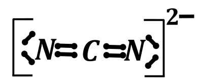
Kolejnym etapem jest hydroliza tego związku zachodząca do węglanu wapnia i amoniaku.
\[CaCN_{2} + 3H_{2}O \rightarrow CaCO_{3} + 2NH_{3}\]
Proces można prowadzić dalej, odtwarzając węglik wapnia:
\[CaCO_{3} \rightarrow CaO + CO_{2}\]
\[CaO + 3C \rightarrow CaC_{2} + CO\]
Jednak jest to oczywiste, że jest to proces nieopłacalny czasowo, energetycznie i finansowo wobec syntezy bezpośredniej.
Amoniak w roztworze wodnym ma właściwości zasadowe z uwagi na obecność wolnej pary elektronowej na azocie:
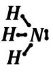
Ulega on odwracalnej hydrolizie w myśl równania:
\[NH_{3} + H_{2}O \rightleftarrows NH_{4}^{+} + OH^{-}\ \ \ \ \ \ \ \ K_{b} \rightarrow tablice\]
Amoniak jak każda zasada tworzy sole w reakcji z kwasami:
\[NH_{3} + HCl \rightarrow NH_{4}Cl\]
Sole te zbudowane są z kationu amonowego \(NH_{4}^{+}\) i anionu odpowiedniego kwasu. Np. \(NH_{4}Cl\) zwany jest chlorkiem amonu. Związek ten nazywany zwyczajowo jest salmiakiem. Praktycznie wszystkie sole amonowe są dobrze rozpuszczalne. Jonowo reakcja ma postać:
\[NH_{3} + H^{+} \rightarrow NH_{4}^{+}\]
Oczywiście dodatek silnej zasady do soli \(NH_{4}^{+}\) powoduje wyparcie amoniaku:
\[NH_{4}Cl + NaOH \rightarrow NaCl + H_{2}O + NH_{3}\]
Amoniak reaguje z metalami aktywnymi z wydzieleniem wodoru i utworzeniem amidku:
\[2Na + 2NH_{3} \rightarrow 2NaNH_{2} + H_{2}\]
Amoniak również reaguje z halogenami dając halogenopochodne amoniaku o dość nieprzyjemnych właściwościach np. \(NCl_{3}\) to toksyczny gaz; a \(NI_{3}\) mocno wybuchowy
\[NH_{3} + 3Cl_{2} + 3NaOH\ \rightarrow NCl_{3} + 3NaCl\]
I analogicznie dla chloru i bromu. Szczególnie łatwo jest uzyskać w domu przez pomyłkę \(NCl_{3}\) –amoniak jest w środkach do mycia (najczęściej okien), a \(Cl_{2}\) jest srodkach do mycia toalet. Wystarczy zmieszać. Większość preparatów typu wybielinka ma środowisko zasadowe
Jodek azotu rozkłada się zgodnie z równaniem:
\[2NI_{3} \rightarrow N_{2} + 3I_{2}\]
Jego wybuchowe właściwości wynikają ze silnego naprężenia kątów w cząsteczce. Duże atomy jodu w tej cząsteczce silnie odpychają się powodując znaczne zwiększenie kąta pomiędzy nimi, a tym odkształcenie kąta od 109° a tym samym silną deformację cząsteczki i łatwość wybuchu
Amoniak ma właściwości kompleksotwórcze względem niektórych kationów metali szczególnie bloku
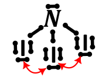
\[Cu^{2 +} + 4NH_{3} \rightarrow Cu\left( NH_{3} \right)_{4}^{2 +}\]
Amoniak można spalić, otrzymujemy w zależności od ilość użytego tlenu do \(N_{2};NO\ ;NO_{2}\)
\[4NH_{3} + 3O_{2} \rightarrow 2N_{2} + 6H_{2}O\]
\[4NH_{3} + {5O}_{2} \rightarrow 4NO + {6H}_{2}O\]
Amoniak nie jest jedynym wodorkiem, który tworzy azot. Popularnym, choć wykraczającym trochę poza zakres maturalny jest hydrazyna o wzorze \(N_{2}H_{4}\) . W związku tym występuje wiązanie azot – azot, oba azoty występują w nim na \(–II\) stopniu utlenienia:
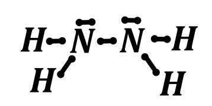
Jest on otrzymywany na skutek reakcji utlenienia amoniaku przy użyciu jonów \(ClO^{-}\) w środowisku zasadowym:
\[NH_{3} + NaClO \rightarrow NH_{2}Cl + NaOH\]
\[NH_{2}Cl + NH_{3} + NaOH \rightarrow N_{2}H_{4} + NaCl + H_{2}O\]
Sumarycznie można zapisać:
\[2NH_{3} + NaClO \rightarrow N_{2}H_{4} + NaCl + H_{2}O\]
Hydrazyna ma zbliżone właściwości kwasowo zasadowe do amoniaku, również jest słabą zasadą w wodzie:
\[N_{2}H_{4} + H_{2}O \rightleftarrows N_{2}H_{5}^{+} + OH^{-}\]
Tworzy sole z silnymi kwasami:
\[N_{2}H_{4} + HCl \rightarrow N_{2}H_{5}Cl\]
\[N_{2}H_{4} + H^{+} \rightarrow N_{2}H_{5}^{+}\]
Hydrazyna w połączeniu z perhydrolem (czystą wodą utlenioną) jest stosowana jako paliwo rakietowe. Zachodzi wówczas reakcja:
\[N_{2}H_{4} + {2H}_{2}O_{2} \rightarrow N_{2} + 2H_{2}O\]
Azot tworzy szereg tlenków azotanu różnych stopniach utlenienia. Zostały one przedstawione w tabeli
| \[+ I\] | \(N_{2}O\) ; obojętny, bezbarwny |
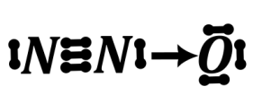 |
|---|---|---|
| \[+ II\] |
\(NO\) - tlenek obojętny, bezbarwny, brunatniejący przy kontakcie z tlenem Reaktywność wynika z obecności niesparwoanego elektornu i braku reguly oktetu dla azotu |
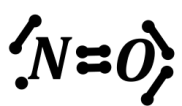 rodnik |
| \[+ III\] | \(N_{2}O_{3}\) kwasowy |
Raczej ta
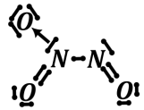 niż ta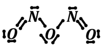 |
| \[+ IV\] |
\(NO_{2}\) brunatny, też istnieje dimer \(N_{2}O_{4}\) - bezbarwny Reaktywność wynika z obecności niesparwoanego elektornu i braku reguly oktetu dla azotu |
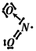 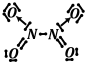 |
| \[+ V\] | \[N_{2}O_{5}\] |
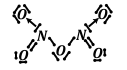 |
Tlenek azotu (I) \(N_{2}O\) otrzymywane jest przez termiczny rozkład azotanu amonu – saletry amonowej:
\[NH_{4}NO_{3} -^{\Delta T} \rightarrow N_{2}O + 2H_{2}O\]
Tlenek ten jest tlenkiem obojętnym, bardzo mało reaktywnym, nie reaguje z kwasami, zasadami ani wodą.
Tlenek \(NO\) uzyskujemy przez spalenie amoniaku albo inaczej katalityczne utlenienie azotu:
\[N_{2} + O_{2} \rightarrow 2NO\]
\[4NH_{3} + 5O_{2} \rightarrow 4NO + 6H_{2}O\]
Ten tlenek powstaje również jeżeli podziałamy na metal szlachetny ROZCIEŃCZONYM kwasem azotowym (V)
\[3Cu + 8HNO_{3} \rightarrow 3Cu\left( NO_{3} \right)_{2} + 2NO + 4H_{2}O\]
Tlenek ten samoistnie, w kontakcie reaguje z tlenem, również tlenem z powietrza daje \(NO_{2}\) .
\[2NO + O_{2} \rightarrow 2NO_{2}\]
Powstały \(NO_{2}\) z uwagi na obecność niesparowanego elektronu na barwę brunatną i powoduje zabarwienie mieszaniny gazowej na ten kolor.
Tlenek azotu (III) \(N_{2}O_{3}\) jest otrzymywane w skutek reakcji synproporcjonacji pomiędzy tlenkiem azotu (II) i tlenkiem azotu (IV):
\[NO + NO_{2} \rightarrow N_{2}O_{3}\]
Ten związek jest tlenkiem kwasowym, więc reaguje z wodą i z zasadami z utworzeniem odpowiednich związków na III stopniu utlenienia:
\[N_{2}^{III}O_{3} + 2NaOH \rightarrow NaN^{III}O_{2}\]
Azotany (III) są związkami trwałymi i nie reagują dalej.
W reakcji z wodą powstaje postaje kwas azotowy(III):
\[N_{2}O_{3} + H_{2}O \rightarrow HNO_{2}\]
Kwas ten jest kwasem nietrwałym i następnie dysproporcjonuje z wydzieleniem \(HNO_{3} + \ NO\)
\[3HNO_{2} \rightarrow HNO_{3} + 2NO + H_{2}O\]
Tlenki azotu na (IV) stopniu utlenienia \(NO_{2}\ \ i\ N_{2}O_{4}\)
Tlenek \(NO_{2}\) ma barwę brunatną, a \(N_{2}O_{4}\) jest bezbarwny.
Związki te współistnieją, przechodząc w siebie:
\[2NO_{2} \rightleftarrows N_{2}O_{4}\]
Reakcja ta jest wzorcowym zastosowaniem reguły przekory. Siłą napędową tego procesu jest parowanie się elektronów w \(NO_{2}\) . Postęp reakcji można oceniać na skutek barwy – brunatnienie reakcji świadczy o powstaniu większej ilości \(NO_{2}\) , a zanik barwy o przesuwaniu się położenia stanu równowagi w stronę \(N_{2}O_{4}\) .
\(NO_{2}\) powstaje na skutek utlenienia \(NO\) :
\[NO + \frac{1}{2}O_{2} \rightarrow NO_{2}\]
Oraz w reakcji metali z STEŻONYM kwasem azotowym, np.:
\[Cu + 4HNO_{3} \rightarrow Cu\left( NO_{3} \right)_{2} + 2NO_{2} + 2H_{2}O\]
Oba tlenki zarówno \(NO_{2}\) jak i \(N_{2}O_{4}\) są tlenkami kwasowymi, brak jest stabilnych kwasów azotowych na IV stopniu utlenienia, więc tlenki te dysproporcjonują dając jednocześnie kwasy na III i V stopniu utlenienia, w reakcji z wodą powstają
\[2NO_{2} + H_{2}O \rightarrow HNO_{2} + HNO_{3}\]
Powstający \(HNO_{2}\) jest nietrwały w tych warunkach i dysproporcjonuje do kwasu azotowego (V) i tlenku azotu (II):
\[3HNO_{2} \rightarrow HNO_{3} + 2NO + H_{2}O\]
Sumarycznie można reakcję \(NO_{2}\) z wodą zapisać w postaci:
\[6NO_{2} + 3H_{2}O + 3HNO_{2} \rightarrow 3HNO_{2} + 3HNO_{3} + 2NO + H_{2}O\]
\[6NO_{2} + 2H_{2}O \rightarrow 4HNO_{3} + 2NO\]
Czyli
\[3NO_{2} + H_{2}O \rightarrow 2HNO_{3} + NO\]
W reakcji tlenku \(NO_{2}\) z zasadą powstają sole kwasu azotowego (V) i kwasu azotowego (III)
\[2NO_{2} + 2NaOH \rightarrow NaNO_{2} + NaNO_{3} + H_{2}O\]
Związki te są trwałe w warunkach zasadowych i nie reagują dalej.
Tlenek \(N_{2}O_{5}\) powstaje na skutek odwodnienia kwasu \(HNO_{3}\) silnym czynnikiem odwadniającym np. \(P_{4}O_{10}\) :
\[12HNO_{3} + P_{4}O_{10} \rightarrow 6N_{2}O_{5} + 4H_{3}PO_{4}\]
Ten tlenek jest tlenkiem kwasowym, po reakcji z wodą otrzymujemy \(HNO_{3}\) lub jego sole.
\[N_{2}O_{5} + H_{2}O \rightarrow 2HNO_{3}\]
\[N_{2}O_{5} + 2NaOH \rightarrow 2NaNO_{3} + H_{2}O\]
Tlenki posiadające niesparowany elektron, czyli \(NO\ i\ NO_{2}\) chętnie reaguja z halogenami i utworzeniem tzw. Halogenków kwasowych – związków wywodzących się z odpowiednich kwasów, tak że grupa OH została zamieniona na halogen np.:
\[2NO + Cl_{2} \rightarrow 2NOCl\]
\[2NO + Br_{2} \rightarrow 2NOBr\]
\(NOCl\) - chlorek nitrozylu \(NOBr\) - bromek nitrozylu
\[2NO_{2} + Br_{2} \rightarrow 2NO_{2}\ Br\]
\(NO_{2}\ Br\) – bromek nitrylu.
Związki te mają budowę analogiczną do kwasów, grupy \(OH\) zastąpione są przez atomy halogenów:
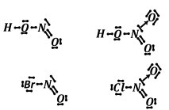
Z uwagi na względnie małą różnicę elektroujemności związki te są gazami, mają budowę molekularną.
Związki te w reakcji z wodą dają odpowiednie kwasy:
\[NO_{2}Cl + H_{2}O \rightarrow HNO_{3} + HCl\]
\[NO_{2}Cl + H_{2}O \rightarrow H^{+} + NO_{3}^{-} + H^{+} + Cl^{-}\]
\(HNO_{3}\) jest kwasem stabilnym, nie reaguje.
\[NOBr + H_{2}O \rightarrow HNO_{2} + HBr\]
\[NOBr + H_{2}O \rightarrow HNO_{2} + H^{+} + Br^{-}\]
Oczywiście powstały \(HNO_{2}\) rozkłada się dalej.
W reakcji z zasadami powstają sole kwasów na odpowiednich stopniach utlenienia:
\[NO_{2}Cl + 2NaOH \rightarrow NaNO_{3} + NaCl + H_{2}O\ \]
\[NO_{2}Cl + 2OH^{-} \rightarrow NO_{3}^{-} + Cl^{-} + H_{2}O\]
\[NOBr + 2KOH \rightarrow KNO_{2} + KBr + H_{2}O\]
\[NOBr + 2OH^{-} \rightarrow NO_{2}^{-} + Br^{-} + H_{2}O\]
Kwasy azotowe
Azot tworzy dwa kwasy tlenowe – kwas słaby nietrwały oraz kwas azotowy (III) oraz mocny utleniający kwas azotowy (V).
Kwas azotowy (III) \(HNO_{2}\) jest kwasem nietrwałym i rozkłada się do kwasu azotowego (V) i tlenku azotu (II)
\[3HNO_{2} \rightarrow HNO_{3} + 2NO + H_{2}O\]
Kwas ten najczęściej uzyskuje się przez zakwaszanie roztworów zawierających anion \(NO_{2}^{-}\) , który jest stabilny
\[NO_{2}^{-} + H^{+} \rightarrow HNO_{2}\]
Kwas azotowy (V) uzyskuje się w przemyśle przez reakcję tlenku azotu (IV) z wodą:
\[6NO_{2} + 2H_{2}O \rightarrow 4HNO_{3} + 2NO\]
Powstały \(NO\) zwraca się i utlenia dalej do \(NO_{2}\)
Kwas ten jest kwasem utleniającym, więc na skutek reakcji tego kwasu z metalami mogą powstać różne produkty od wodoru:
| Metal szlachetny E>0V | Metal nieszlachetny E<0V | |
|---|---|---|
| HNO 3(stęż) | Sól + NO 2 + H 2 O | Sól + NO 2 + H 2 O |
| HNO 3(rozc) | Sól + NO + H 2 O | Sól + H 2 |
Np. reakcja miedzi – metalu o potencjale większym niż 0V z stężonym kwasem azotowym prowadzi do powstania:
\[Cu + HNO_{3} \rightarrow Cu\left( NO_{3} \right)_{2} + NO_{2} + H_{2}O\]
Po zbilansowaniu reakcji redoksem:
\[Cu + 4HNO_{3} \rightarrow Cu\left( NO_{3} \right)_{2} + 2NO_{2} + 2H_{2}O\]
Natomiast reakcja miedzi z rozcieńczonym kwasem prowadzi do powstania tlenku azotu (II)
\[Cu + 8HNO_{3} \rightarrow 3Cu\left( NO_{3} \right)_{2} + 2NO + 4H_{2}O\]
Inaczej zachowuje się cynk, w reakcji z stężonym kwasem wydziela się \(NO_{2}\)
\[Zn + 4HNO_{3} \rightarrow Zn\left( NO_{3} \right)_{2} + 2NO_{2} + 2H_{2}O\]
A w reakcji z rozcieńczonym dostajemy wodór
\[Zn + 2HNO_{3} \rightarrow Zn\left( NO_{3} \right)_{2} + H_{2}\]
Jednocześnie należy podkreślić, iż mogą powstać inne produkty niż \(NO_{2},\ \) \(NO\) , \(H_{2}\) w zależności od warunków prowadzenia reakcji. Wymaga to jednak informacji wstępnej.
Istnieją również inne kwasy azotowe niż wymienione, ale one również mogą wystąpić w przypadku informacji wprowadzającej. Sole kwasu azotowego (V) to saletry
\(NaNO_{3}\) =saletra sodowa
\(KNO_{3}\) =saletra potasowa
\(NH_{4}NO_{3}\) =saletra amonowa
Związki te używane są jako nawozy.
Kwas azotowy(V) – jest on obok kwasu solnego składnikiem wody królewskiej – roztworu roztwarzającego złoto:
\[Au + 4HCl + 3HNO_{3} \rightarrow HAuCl_{4} + 3H_{2}O + 3NO_{2}\]
Znane są również inne nietypowe, jak na maturę związki azotu np. kwas azotowodorowy \(HN_{3}\) , jego sole nazywane są azydkami. Struktura elektronowa tego związku oraz jego anionu wygląda następująco:
Otrzymujemy go w reakcji hydrazyny z kwasem azotowym(III):
\[N_{2}H_{4} + HNO_{2} \rightarrow HN_{3} + H_{2}O\]
Kwas ten jest słabym kwasem, w wodzie dysocjuje z utworzeniem jonu \(H^{+}\) oraz anionu azydkowego \(N_{3}^{-}\)
\[HN_{3} \rightleftarrows H^{+} + N_{3}^{-}\]
Reaguje on z zasadami z utworzeniem soli:
\[HN_{3} + NaOH \rightarrow NaN_{3} + H_{2}O\]
Drugim związkiem, którego można spotkać na maturze, a jest go cyjanowodór \(HCN\) . Jego strukturę elektronową przedstawia grafika:
Związek ten jest słabym kwasem, dysocjuje wedle równania
\[HCN \rightleftarrows H^{+} + CN^{-}\]
W reakcji z zasadami daje on sole – cyjanki
\[HCN + NaOH \rightarrow NaCN + H_{2}O\]
Anion cyjankowy ma silne właściwości kompleksotwórcze z metalami bloku d:
\[Fe^{2 +} + 6CN^{-} \rightarrow Fe(CN)_{6}^{4 -}\]
Obecnie cyjanowodór wytwarzany jest w reakcji Andrussowa z metanu i amoniaku w obecności tlenu:
\[2CH_{4} + 2NH_{3} + 3O_{2} \rightarrow 2HCN + 6H_{2}O\]
Pochodne cyjankowe można również otrzymać w domu:
\[Fe_{2}O_{3} + 27C + 8NaNO_{3} \rightarrow 2Na_{4}\left\lbrack Fe(CN)_{6} \right\rbrack + \frac{27}{2}CO_{2}\]
powstający jon kompleksowy \(Fe(CN)_{6}^{4 -}\) = to żelazo (II) otoczone przez 6 anionów cyjankowych
\(HCN\) uzyskamy zakwaszając stężonym kwasem siarkowym uzyskany produkt reakcji:
\[Na_{4}\left\lbrack Fe(CN)_{6} \right\rbrack + 3H_{2}SO_{4} \rightarrow 2Na_{2}SO_{4} + FeSO_{4} + 6HCN\]
Zarówno \(HCN\) jak \(CN^{-}\) są silnie trujące – trwale łącząc się z hemoglobiną blokują transport tlenu.
Działanie chloru na cyjanek sodu prowadzi do uzyskania chloro pochodnej:
\[NaCN + Cl_{2} \rightarrow ClCN + NaCl\]
Którą możemy przeprowadzić w dicyjan \(NC - CN\)
\[ClCN + NaCN \rightarrow NC - CN + NaCl\]
Znane są rówież kwasy tlenowe zawierające grupę \(CN\)
\(HOCN\) kwas cyjanionowy
\(HSCN\) kwas tiocyjanionowy
Fosfor
Fosfor, podobnie jak węgiel występuje w wielu odmianach alotropowych różniących się właściwościami i reaktywnością; poniżej przedstawione są często występujące formy alotropowe fosforu:
\(P_{4}\)
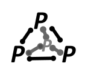
biały fosfor, najbardziej reaktywna forma, kryształ cząsteczkowy/ molekularny
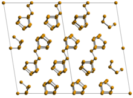
fosfor czerwony – mniej reaktywny, budowa cząsteczkowa (cząsteczki \(P_{22})\)
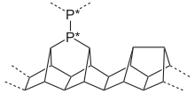
fosfor fioletowy –struktura kryształu kowalencyjnego.
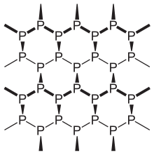
- czarny fosfor - najmniej reaktywny, kryształ kowalencyjny (struktura zbliżona do grafitu)
Fosfor tworzy również wiele tlenki fosforu, ich struktury można wyprowadzić z struktury fosforu białego.
Podstawowym tlenkiem fosforu do wyprowadzania struktury innych struktur jest \(P_{4}O_{6}\) . Strukturę tego związku można wyprowadzić z struktury fosforu białego \(P_{4}\) w miejsce wiązań \(P - P\) umieszczając mostki tlenowe \(P - O - P\) . Strukturę tego związku pokazano na rysunku:
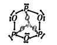
Fosfory obecne w tym związku mają wolne pary elektronowe i mogą one je wykorzystać do utworzenia wiązań koordynacyjnych do dodatkowych atomów tlenu. Przyłączenie jednego atomu tlenu do jednego fosforu daje nam \(P_{4}O_{7}\) , dwóch \(P_{4}O_{8}\) itd., aż do \(P_{4}O_{10}\) . Z uwagi na strukturę np. \(P_{4}O_{8}\) nie zawiera atomów fosforu na IV stopniu utlenienia, tylko dwa atomy fosfory na III i dwa na V.
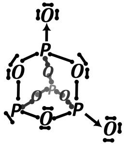
Fosfor biały reaguje z zasadami, dając fosfinę \(PH_{3}\) (czyli fosforowy analog amoniaku) oraz sól kwasu fosforowego (I):
\[P_{4} + OH^{-} \rightarrow PH_{3} + H_{2}PO_{2}^{-}\]
Reakcję tę bilansujemy przy użyciu bilansu redoks:
\[P_{4} + 3OH^{-} + 3H_{2}O \rightarrow PH_{3} + 3H_{2}PO_{2}^{-}\]
Lub w zapisie cząsteczkowym:
\[P_{4} + 3NaOH + 3H_{2}O \rightarrow PH_{3} + 3NaH_{2}PO_{2}\]
Należy w tym miejscu powiedzieć, że kwas fosforowy (I), \(H_{3}PO_{2}\) jest kwasem jednowodorowym (o czym dalej będzie), więc anion tego kwasu będzie tylko i wyłącznie jednoujemny.
\(P_{4}\) (oraz inne odmiany alotropowe też) ulegają utlenieniu kwas steżonym azotowym (V) do kwasu fosforowego (V). Reakcję tę również bilansuje redoksem:
\[P_{4} + 20HNO_{3} \rightarrow 4H_{3}PO_{4} + 20NO_{2} + 10H_{2}O\]
Oczywiście ulega reakcji spalenia, dając tlenki wymienione powyżej, w zależność od stosunku stechiometrycznego użytego fosforu do tlenu:
\[P_{4} + 5O_{2} \rightarrow P_{4}O_{10}\]
I kolejno reaguje też z chlorem czy bromem dając odpowiednie chlorki kwasowe \(PCl_{3}\) lub \(PCl_{5}\) , produkt reakcji również zależy od stechiometrii
\[P_{4} + 6Cl_{2} \rightarrow 4PCl_{3}\]
\[P_{4} + 10Cl_{2} \rightarrow 4PCl_{5}\]
Analogi bromkowe tych związków \(PBr_{3}\) i \(PBr_{5}\) również są otrzymywane w taki sam sposób.
Chlorki kwasowe (halogenki kwasowe) po reakcji z wodą dają odpowiednie kwasy fosforowe
\[PCl_{3} + 3H_{2}O \rightarrow \ H_{3}PO_{3} + 3HCl\]
\[PCl_{5} + 4H_{2}O \rightarrow H_{3}PO_{4} + 5HCl\]
Do związków typu chlorków kwasowych klasyfikuje się również \(POCl_{3}\) - tlenochlorek fosforu. Również on hydrolizuje z utworzeniem odpowiednich kwasów:
\[POCl_{3} + 3H_{2}O \rightarrow H_{3}PO_{4} + 3HCl\]
Analogicznie dla azotu możemy mieć zwiazki typu soli zawierające kation metalu aktywnego i anion \(P^{3 -}\) . Powstają one w reakcji metali aktywnych z fosforem białym.
\[12Na + P_{4} \rightarrow 4Na_{3}P\ = \left\lbrack 3Na^{+} + P^{3 -} \right\rbrack\]
Związki te również są niestabilne pod wpływem wody:
\[Na_{3}P + 3H_{3}O \rightarrow 3NaOH + PH_{3}\]
Istnieją trzy podstawowe kwasy fosforowe, na które należy zwrócić uwagę: kwas fosforowy (I) \(H_{3}PO_{2}\) , fosforowy (III) \(H_{3}PO_{3}\) oraz fosforowy (V) \(H_{3}PO_{4}\) . Kwasy \(H_{3}PO_{3}\) oraz \(H_{3}PO_{2}\) mają nietypowe struktury Lewisa – mają odpowiednia jednego albo dwa wodory podłączone do atomu fosforu.
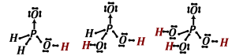
Protonami kwaśnymi są te, które przyłączone są silnie elektroujemnych atomów, a więc w tym wypadku do atomu tlenu i tylko te atomy można dysocjować. Atomów wodoru przyłączonych do atomu fosforu nie jesteśmy w stanie oderwać zasadą z uwagi na niską różnicę elektroujemności między nimi, a tym samym małą polaryzację tegoż wiązania. W związku, z czym \(H_{3}PO_{2}\ \) jest kwasem jednowodorowym, \(H_{3}PO_{3}\) jest kwasem dwuwodorowym, a \(H_{3}PO_{4}\) dopiero jest kwasem trzywodorowym.
Fosfor ma silne właściwości tworzenia mostków tlenowych pomiędzy atomami fosforu: \(P - O - P\) , są to bardzo korzystne a więc silne energetycznie wiązania. Ta energetyczność jest do transportu energii w organizmach żywych – w układzie ATP/ADP powstające wiązanie fosfor tlen jest nośnikiem energii.
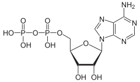
Z trwałości wiązania \(P - O - P\) wynika możliwość utworzenia dodatkowych kwasów fosforowych, będących produktami kondensacji z wydzieleniem cząsteczek wody wymienionych wcześniej wodorsolikwasów fosforowych, np.:
\[Na_{2}HPO_{4} + Na_{2}HPO_{4} \rightarrow Na_{4}P_{2}O_{7} + H_{2}O\]
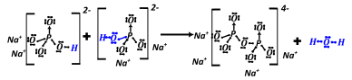
Produkty polikondensacji mogą być również cykliczne jak np. w przypadku kondensacji trzech cząsteczek diwodorofosforanu sodu:
\[3NaH_{2}PO_{4} \rightarrow Na_{3}P_{3}O_{9} + 3H_{2}O\]
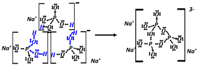
Powstały związek ma wzór empiryczny \(NaPO_{3}\) jednak w żaden sposób nie odzwierciedla to jego struktury.
\[3NaH_{2}PO_{4} \rightarrow Na_{3}P_{3}O_{9} + 3H_{2}O\]
Kwasy polifosforowe można shydrolizować na normalne kwasy fosforowe przez ogrzewanie do wrzenia w roztworze wodnym z dodatkiem kwasu lub zasady.
Istnieje możliwość utworzenia mieszanych kwasu polifosforowych przez kondensacje kilku różnych cząsteczek kwasów fosforowym (V) lub (III).
Moc wiązania \(P - O - P\) jest siłą napędową właściwości odwadniających kwasów fosforowych.